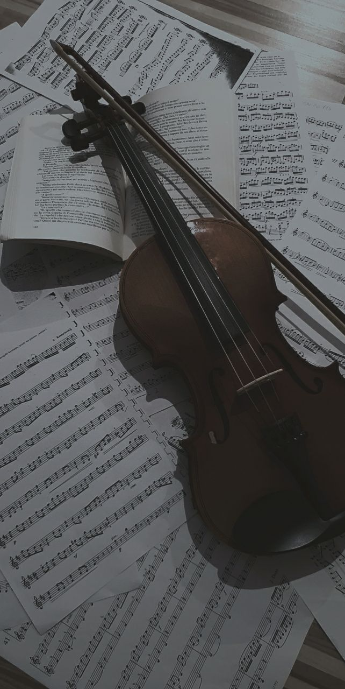
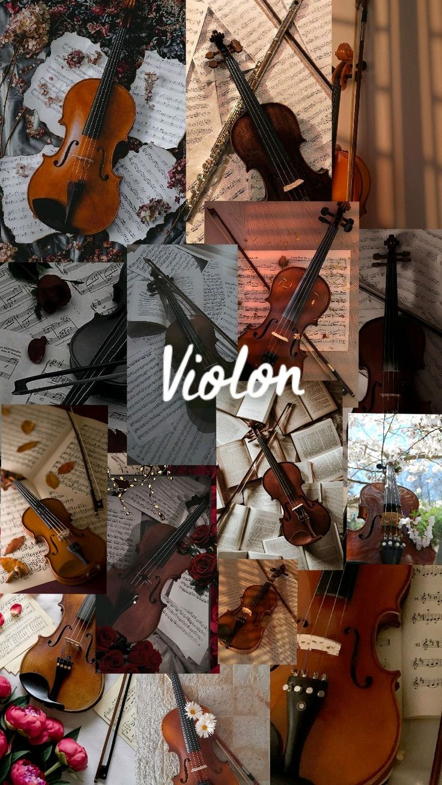
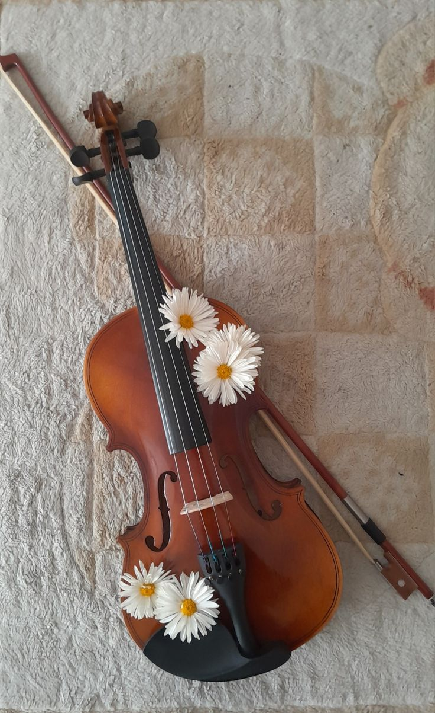
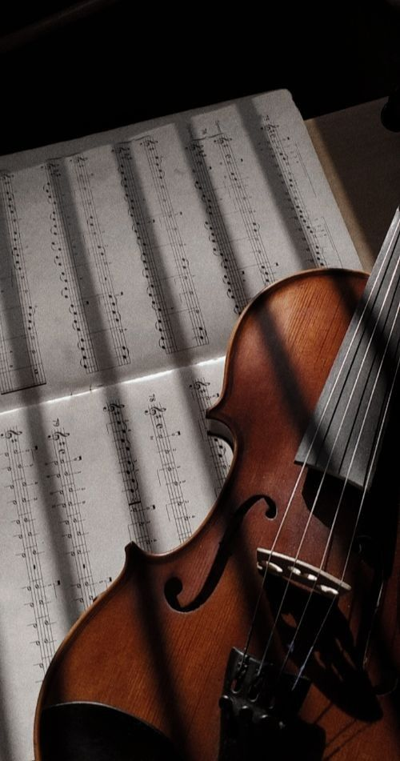

being a beginner at something is humbling.
i picked up the violin because i wanted to play the anime themes that keep running through my head. specifically gurenge from demon slayer. my brain understands the mechanics of it. i can read the scale breakdowns, i can memorize the finger charts, i know exactly where my posture should be in theory.
but my hands completely refuse to cooperate. the bow moves too fast, the strings screech, and the transition between notes feels less like music and more like a tactical error. it sounds like a dying cat in my room right now, but every once in a while, i can hear the actual melody hiding underneath the noise. just a split second of clarity before it falls apart again.




i will get this, though. it might take an unreasonable amount of hours, but i will get it. there is something incredibly healthy about being bad at something and knowing that the only way out is through repetition. in coding, you can look up documentation. with the violin, you just have to sit there and face the sound until your fingers remember the shape of the music.
the howl's moving castle theme was actually the gateway. that movie does something to me. and the music — that specific piano-to-orchestral swell — made me want to understand how to make something feel like that. the violin felt like the right instrument for it. something warm. something that carries emotion in its texture rather than just its notes.
demon slayer was a detour into the dramatically harder version of the same goal. but the goal is the same: i want to be able to hold an instrument and make something that sounds like what i feel. i'm not there yet. but i am further than i was last week, and that's the only metric that matters.
← Back to Blog